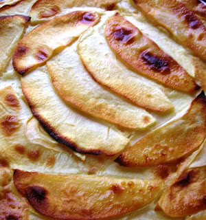

Siete recetas de tartas fáciles para llevar a las casas de amigos y familiares
 Webedia Directo al Paladar Menú Nuevo Buscar Pinterest Facebook Flipboard Instagram Youtube POSTRES MENÚ SEMANAL SELECCIÓN
Webedia Directo al Paladar Menú Nuevo Buscar Pinterest Facebook Flipboard Instagram Youtube POSTRES MENÚ SEMANAL SELECCIÓN
Partners
Triunfa Con Buitoni Cocina con Maggi Destaca con PascualSiete recetas de tartas fáciles para llevar a las casas de amigos y familiares
5 comentarios HOY SE HABLA DE Menú Patatas Frutos secos Mascarillas España Andalucía Ofrecido por PascualTarta banoffee: plátano y toffee para un clásico de la repostería
Ofrecido por MaggiPor qué mucha gente tiene la tortilla de patata y calabacín como su receta favorita de este clásico
Ofrecido por BuitoniEmpanadas criollas: la edad dorada de una elaboración de origen humilde
Compartir Siete recetas de tartas fáciles para llevar a las casas de amigos y familiares
Facebook Twitter Flipboard Email Síguenos Twitter Facebook Youtube Instagram Pinterest Flipboard 06 junio 2020, 18:01 Carmen Tía Alia @tiaalia ¡Gracias! 118 votosLas reuniones de familiares y amigos se han vuelto una realidad y, quienes más y quienes menos, ya están disfrutando de ellas en sus casas. Si entre los tuyos tenéis la costumbre de repartir el trabajo que llevan estas comidas o cenas y te ha tocado hacerte cargo del postre, echa un vistazo a estas recetas de tartas fáciles para llevar .
Porque puede que te encante cocinar y no tengas tiempo para ello. O, simplemente, porque la repostería no sea lo tuyo y necesites una receta infalible. Si te suena el asunto y estás asintiendo internamente, atento a nuestras sugerencias. Cualquiera de ellas te pueden solucionar la papeleta .
En Directo al Paladar 63 recetas de pizzas, quiches y otras tartas saladas para compartir con nuestros nueve mejores amigosTarta fácil de chocolate lista en 15 minutos
Ingredientes
Para 8 personas Galletas tipo Digestive 200 g Mantequilla a temperatura ambiente 100 g Chocolate negro para postres 250 g Leche entera 1 l Cuajada en polvo sobres 2 Azúcar 50 g Chocolate blanco para decorar (opcional) 100 gCómo hacer tarta de chocolate fácil y rápida
Dificultad: Fácil Tiempo total 15 m Elaboración 5 m Cocción 10 mTrituramos las galletas dentro de una bolsa de plástico bien cerrada y pasando por encima un rodillo. Agregamos la mantequilla a temperatura ambiente o, incluso mejor, ligeramente fundida. Mezclamos bien para obtener una masa homogénea. Cubrimos la base y laterales de un molde desmoldable de 25 cm , aplastando bien para compactar, y guardamos en la nevera o congelador para que endurezca.
Mientras tanto preparamos el relleno . Picamos el chocolate y lo calentamos en un cacito junto con la leche, los dos sobres de cuajada y el azúcar durante 10 minutos. Removemos bien para que no queden grumos. Vertemos sobre la base de galletas y dejamos cuajar en la nevera durante cuatro horas aproximadamente. Con un pelador hacemos virutas de chocolate blanco y decoramos la tarta en el momento de servir.
¡Gracias! 118 votosMás detalles | Tarta fácil de chocolate lista en 15 minutos
Tarta de galletas María
Ingredientes: 2 paquetes de galletas tipo María, 200 g de mantequilla sin sal a temperatura ambiente, 180 g de azúcar glasé, 2 yemas de huevo a temperatura ambiente, 250 ml de leche a temperatura ambiente y 3 ml de esencia de vainilla.
Elaboración: Calentar la leche a fuego suave con media vaina de vainilla abierta. Dejar infusionar, colar y dejar enfriar. Disponer la mantequilla troceada, a temperatura ambiente, en un recipiente mediano. Batir con varillas hasta cremar. Añadir poco a poco el azúcar glasé, sin dejar de batir, removiendo de vez en cuando con una lengua para conseguir una textura uniforme. Agregar las yemas y la esencia de vainilla y batir un poco más a velocidad baja hasta tener una consistencia cremosa, homogénea y sin grumos. Mojar una galleta María en la leche enfriada, escurrir y disponer en el centro de una fuente. Repetir con seis galletas más para distribuirlas a su alrededor, formando una base de flor de galletas. No tienen que estar muy empapadas. Untar ligeramente cada galleta con la crema, repartiéndola uniformemente. Repetir la operación hasta tener cinco pisos de galletas y crema. Cubrir la superficie y los laterales, alisando con ayuda de una espátula de repostería. Triturar unas cuantas galletas María y repartir por la parte superior. Dejar enfriar en la nevera una hora.
Más detalles | Tarta de galletas María
En Directo al Paladar 23 recetas de tartas, bizcochos y pasteles para aprovechar la fruta que tienes en casaTarta fina de mango
Ingredientes para seis personas: 6 hojas de pasta brick, 2 mangos medianos, 30 g de mantequilla fundida, 2 cucharaditas de azúcar glas, 1 cucharada de sirope de arce o miel de caña. Para la crema de almendra: 60 g de mantequilla a temperatura ambiente, 60 g de azúcar, 60 g de almendra en polvo, 20 g de almendra tostada granillo, 1 cucharada sopera de maicena, 1 huevo M.
Elaboración: Comenzaremos precalentando el horno a 200 grados con calor arriba y abajo. Con un cuchillo bien afilado o una mandolina cortamos el mango en finas rodajas. Reservamos. Para hacer la base, ponemos en una bandeja de horno una lámina de pasta brick, la pintamos con mantequilla derretida y la espolvoreamos con azúcar las. Repetimos esta operación con el resto de las láminas. Para hacer la crema, batimos con unas varillas la mantequilla a temperatura ambiente con el azúcar. Le incorporamos la almendra en polvo, la Maicena, el huevo y el granillo de almendra, reservando un poco para espolvorear a la hora de servir. Esparcimos por la masa brick la masa de almendra hasta un centímetro del borde y colocamos en forma de flor el mango. Horneamos durante 25 minutos aproximadamente y cuando la retiremos del horno le pintamos la fruta con el sirope de arce, espolvoreando el granillo de almendra por encima.
Más detalles | Tarta fina de mango
Tarta de manzana en 15 minutos
Ingredientes: 2 o 3 manzanas, 3 huevos L, 50 g de mantequilla, 250 ml de leche semidesnatada, 5 cucharadas soperas rasas de fécula de maíz, 150 g de azúcar, 1 sobre de levadura química, caramelo líquido para bañar el molde, 3 cucharadas de mermelada de albaricoque o manzana para barnizar la tarta.
Elaboración: Añadimos caramelo líquido en la base del molde y los laterales. Pelamos las manzanas y las cortamos en lonchas finas. Derretimos unos segundos a media potencia la mantequilla en un bol para que esté líquida y templamos la mermelada otros segundos. Reservamos mientras que batimos la masa. En un vaso alto echamos, la fécula de maíz o Maicena, los huevos, la leche, el azúcar, el sobre de levadura y la mantequilla derretida. Batimos hasta mezclar. Vertemos en el molde y colocamos las manzanas. Ponemos en el microondas y cocemos a 800 watios durante cinco minutos, dejamos reposar cinco minutos dentro del microondas, cocemos otros cuatro minutos a 800 watios. Pincharmos con un palillo para comprobar que salga limpio si no, ponermos un minuto o dos más dependiendo de vuestro microondas. Pintamos con cuidado con la mermelada y gratinar un minuto con el grill para dorarle la superficie. Dejamos enfriar en la nevera.
Más detalles | Tarta de manzana en 15 minutos
En Directo al Paladar 17 tartas fáciles para hacer con niñosCheesecake de Nutella
Ingredientes para un molde de 18 cms o ocho personas: 125 g de galletas digestive, 35 g de mantequilla, 300 g de Nutella, 350 g de queso crema, 30 g de azúcar glas y 50 g de avellanas peladas.
Elaboración: La base de la tarta se elabora con 50 g de Nutella, por ello lo primero que debemos hacer es separar esta cantidad de los 300 g de Nutella totales. El resto lo reservamos para la crema. En un robot de cocina trituramos las galletas digestive, la mantequilla y los 50 g de Nutella. Obtendremos una masa homogénea con la que cubrir la base de nuestro molde (mejor desmoldable). A continuación, en un recipiente hondo mezclamos el queso crema con el resto de la Nutella y el azúcar glas. Si le damos calor, conseguiremos mezclar los ingredientes de manera más fácil. Esto lo podemos hacer colocando el recipiente sobre una cacerola con agua hirviendo y removiendo con unas varillas o utilizando un robot de cocina con posibilidad de aplicar calor, tipo thermomix. Rellenamos el molde desmoldable con esta mezcla, dejándola caer con suavidad. La extendemos por toda la superficie, ya sea moviendo ligeramente el molde o golpeándolo sobre la encimera. Lo introducimos en la nevera y dejamos que tome cuerpo, según se enfría, durante un mínimo de 5 horas (mejor si es durante toda la noche). Media hora antes de desmoldarlo, lo introducimos en el congelador. Esto nos ayudará a manipularlo, puse es un cheesecake delicado. Picamos las avellanas con un cuchillo o las machacamos en un mortero, las tostamos en una sartén a fuego medio-alto, removiendo de vez en cuando para que no se quemen. Desmoldamos el cheesecake y lo decoramos con las avellanas tostadas.
Más detalles | Cheesecake de Nutella
Tarta fácil de hojaldre con fresas y almendra
Ingredientes para un molde de 20 centímetros de diámetro: 2 planchas de hojaldre refrigerado, 400 g de fresas, 80 g de azúcar moreno, 100 g de almendra molida, 20 g de mantequilla, 1 cucharada de harina.
Elaboración: Comenzaremos lavando las fresas y cortándolas a la mitad. Engrasamos un molde de tarta y lo enharinamos con la cucharada de harina. Extendemos encima de la base del molde una de las planchas de hojaldre refrigerado. Precalentamos el horno con calor arriba y abajo a 210 grados. Mezclamos la almendra molida con la mitad del azúcar moreno y extendemos esta mezcla encima del hojaldre repartiéndola por igual. Echamos las fresas. Cortamos la otra plancha de hojaldre en tiras de un centímetro de grosor y las disponemos encima de las fresas creando un enrejado. Espolvoreamos el resto del azúcar moreno por encima del hojaldre y horneamos durante 30 minutos. Retiramos del horno y dejamos enfriar a temperatura ambiente.
Más detalles | Tarta fácil de hojaldre con fresas y almendra
Suscríbete para recibir cada día nuestras recetas, información sobre nutrición y actualidad sobre gastronomía.
Tarta de queso sin horno
Ingredientes para un molde de 12 cm de diámetro: 50 g de galletas (básicas), 20 g de mantequilla, 135 g de queso crema, 100 g de leche, 12 g de cuajada en polvo (1 sobre) y 40 g de azúcar glas.
Elaboración. Comenzamos por la base de galleta y, para ello, machacamos las galletas y las mezclamos bien con la mantequilla, que habremos fundido previamente, hasta obtener una masa homogénea. Las galletas las podemos machacar manualmente en un mortero, en un molinillo eléctrico o dentro de una bolsa y aplastándola con un rodillo. Cubrimos la base de nuestro molde con la mezcla de la galleta y la mantequilla, asegurándonos de apretar bien para que quede condensada bien distribuida por la base. Dejamos enfriar mientras preparamos el relleno. Podemos introducirla en la nevera o en el congelador para que tome cuerpo y endurezca un poco. Mezclamos la cuajada en polvo con el azúcar glas y le añadimos 80 g de leche. Removemos hasta disolver. Calentamos los 20 g de leche restantes junto con el queso crema y cuando comience a hervir, incorporamos la mezcla anterior. Removemos al tiempo que toma temperatura y retiramos del fuego cuando alcance de nuevo el hervor. Rellenamos el molde con la mezcla y dejamos atemperar antes de introducir en la nevera donde esperaremos a que solidifique durante, al menos, un par de horas antes de desmoldar y decorar con fruta, mermelada o lo que más nos guste o tengamos a mano. Servimos fría de la nevera.
Más detalles | Tarta de queso sin horno
En Directo al Paladar | Las cinco tartas más buscadas de Internet y sus recetas más fáciles y deliciosas
En Directo al Paladar | Las 7 mejores recetas de tartas de cumpleaños con chocolate
Directo al Paladar en Instagram
Seguir
Compartir Siete recetas de tartas fáciles para llevar a las casas de amigos y familiares
Facebook Twitter Flipboard E-mail Temas Recetas de Postres recetas Tartas Postres fáciles y rápidos Recetas fáciles y rápidasCompartir
Facebook Twitter Flipboard E-mail 1Si te ha gustado, puedes recibir más en tu correo
Te enviamos nuestra newsletter una vez al día, con todo lo que publicamos
Comentarios cerradosLos mejores comentarios:
Ver 5 comentarios
Temas de interés Tarta tres cocholates Thermomix brownie bizcocho de yogur crema pastelera Roscón de Reyes ensalada césar pollo al horno lentejas tortilla de patatas croquetas torrijas fideuá InicioPartners
Triunfa Con Buitoni Cocina con Maggi Destaca con Pascual Recetas con Thermomix Recetas de Aperitivos Recetas de Ensaladas Recetas de Postres Recetas Vegetarianas Utensilios Postres fáciles y rápidos Recetas de invierno Horno Huevos Azúcar HarinaVer más temas
Síguenos Twitter Facebook Youtube Instagram Pinterest Flipboard Directo al Paladar TV Lo mejor Equipo editorial Contacta con nosotrosMás sitios que te gustarán
Espinof Xataka Poprosa VitónicaExplora en nuestros medios
Tecnología Móviles, tablets, aplicaciones, videojuegos, fotografía, domótica Xataka Xataka Móvil Xataka Foto Xataka Android Xataka Smart Home Xataka Windows Xataka Ciencia Applesfera Genbeta Magnet Mundo Xiaomi Videojuegos Consolas, juegos, PC, PS4, Switch, Nintendo 3DS y Xbox 3DJuegos Vida Extra IGN Millenium Entretenimiento Series, cine, estrenos en cartelera, premios, rodajes, nuevas películas, televisión Sensacine Espinof Gastronomía Recetas, recetas de cocina fácil, pinchos, tapas, postres Directo al Paladar Estilo de vida Moda, belleza, estilo, salud, fitness, familia, gastronomía, decoración, famosos Vitónica Trendencias Trendencias Hombre Decoesfera Compradiccion Poprosa Latinoamérica Publicaciones de México Xataka México Directo al Paladar México Sensacine México 3DJuegos México Aviso legal Condiciones de uso Condiciones de uso de cookies Publicidad InicioReciente
Redondo frío de pollo, receta perfecta para un picnic Nuestros favoritos Suspiros de Pajares, receta tradicional asturiana para nostálgicos de las galletas de mantequilla de toda la vida Ocho recetas de fritura de pescado para un picoteo del finde marinero Gastroguía de Sevilla: qué comer en la capital de Andalucía (y qué restaurantes no debes perderte en la ciudad hispalense) Cómo hacer mantequilla a las finas hierbas Nuestros favoritos Gratén o gratinado de patatas con cebolla caramelizada y queso, la receta que los más queseros adorarán Las sartenes mejor valoradas de Amazon en oferta con las que adelantarte al Prime Day Ensalada fusilli con mozzarella y atún, receta de pasta de verano Nuestros favoritos Cómo hacer los mejores boquerones fritos en casa Recetas variadas para disfrutar del verano en el menú semanal del 21 de junio Francia retira 7.000 productos por presencia de óxido de etileno: qué es esta sustancia cancerígena prohibida y cómo llega a los alimentos Narezushi: el antecedente directo del sushi es un pescado fermentado no apto para melindrosos Las mejores freidoras de aire caliente para cocinar sin aceite y llevar una alimentación equilibrada desde 60 euros en Amazon Recetas frescas de verano perfectas para la cena en el paseo por la gastronomía de la red Cómo hacer mantequilla clarificada o manteca de vaca cocida: receta ideal para la repostería tradicional Del gazpacho de Belén Esteban a las patatas fritas de Nil Ojeda y Paula Gonu: las nuevas marcas personales de comida en España Ajo caliente, campero o de viña: la humilde receta tradicional andaluza que nos tiene cautivados Por qué los gallegos nunca beben agua cuando comen pulpo Tapas: 57 ideas fáciles para comer de picoteo Nuestros favoritos Probamos la Aifryer XL de Philips, una freidora sin aceite extragrande (y con WiFi)Ver más artículos
Directo al Paladar TV
Receta de empanadas criollas caseras, fáciles y rápidas SANGRÍA como DIOS MANDA Cómo sacar TODO EL PARTIDO a una FREIDORA SIN ACEITEVer más vídeos
Síguenos Twitter Facebook Youtube Instagram Pinterest FlipboardEn Directo al Paladar hablamos de
Recetas con Thermomix Recetas de Aperitivos Recetas de Ensaladas Recetas de Postres Recetas Vegetarianas Utensilios Postres fáciles y rápidos Recetas de invierno Horno Huevos Azúcar HarinaVer más temas
SubirWebedia
Tecnología
Xataka Xataka Móvil Xataka Foto Xataka Android Xataka Smart Home Xataka Windows Xataka Ciencia Applesfera Genbeta Magnet Mundo XiaomiVideojuegos
3DJuegos Vida Extra IGN MilleniumEntretenimiento
Sensacine EspinofGastronomía
Directo al PaladarEstilo de vida
Vitónica Trendencias Trendencias Hombre Decoesfera Compradiccion PoprosaLatinoamérica
Xataka México 3DJuegos México Sensacine México Directo al Paladar México Webedia Xataka Vida Extra Espinof Genbeta Directo al Paladar Xataka Ciencia Trendencias Applesfera Xataka Móvil Decoesfera Vitónica Xataka Foto Trendencias Hombre Xataka Android Xataka Smart Home Xataka Windows Magnet Compradiccion 3DJuegos Sensacine IGN Millenium Poprosa Mundo XiaomiTecnología
Xataka Xataka Móvil Xataka Foto Xataka Android Xataka Smart Home Xataka Windows Xataka Ciencia Applesfera Genbeta Magnet Mundo XiaomiVideojuegos
3DJuegos Vida Extra IGN MilleniumEntretenimiento
Sensacine EspinofGastronomía
Directo al PaladarEstilo de vida
Vitónica Trendencias Trendencias Hombre Decoesfera Compradiccion Poprosa